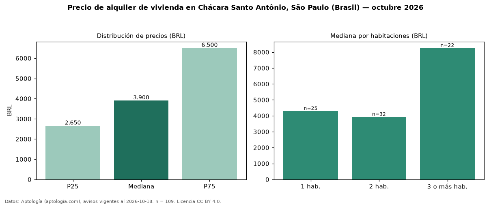

Precio de alquiler de vivienda en Chácara Santo Antônio, São Paulo (Brasil) — octubre 2026
En Chácara Santo Antônio, São Paulo (Brasil), la mediana de canon mensual de vivienda es BRL 3.900, según 109 avisos vigentes. Por metro cuadrado, la mediana es BRL 87,50/m² al mes (n = 109 avisos con área). Por tipo: 63 % apartamentos, 28 % kitnets y studios, 9 % casas. El área mediana anunciada es 45 m². La mitad central de los avisos va de BRL 2.650 a BRL 6.500 (razón 2,5), una dispersión alta. El segmento con más oferta es el de 2 habitaciones (32 avisos, mediana BRL 3.925); pasar de 1 habitación a 3 o más habitaciones cambia la mediana +92 %. La cuota de mantenimiento o condominio mediana declarada es BRL 709 al mes (n = 98), aparte del canon. Datos: Aptología (aptologia.com), CC BY 4.0 — https://www.aptologia.com/br/aluguel/sao-paulo. Archivos: PDF, CSV con las cifras y gráfica PNG.

| Avisos únicos | 109 |
|---|---|
| Percentil 25 | COP 2.650 |
| Mediana | COP 3.900 |
| Percentil 75 | COP 6.500 |
| Mediana por m² | COP 87 |
Fuente: avisos vigentes de portales inmobiliarios recopilados por Aptología, deduplicados (mínimo 30 avisos únicos por celda). Precios pedidos, no cerrados. Fecha: 2026-10-18.